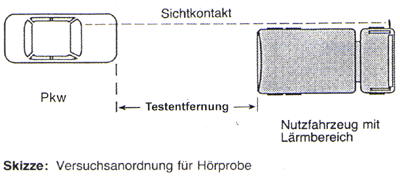

4 Durchführung der Hörprobe
4.1 Grundsätzliches
Grundsätzlich ist vor dem erstmaligen Einsatz der nach Abschnitt 3 ausgewählten Gehörschützer mit den betroffenen Versicherten eine Hörprobe - wie in den Abschnitten 4.2 bis 4.4 beschrieben - durchzuführen.
Die Hörprobe besteht aus zwei Versuchsabschnitten:
- Feststellen der Entfernung, bis zu der ohne Gehörschutz das Hupsignal bei Betriebsgeräusch gehört wird,
und
- Überprüfung, ob in dieser Entfernung mit Gehörschutz das Hupsignal bei Betriebsgeräusch noch sicher erkannt wird.
Außerhalb des öffentlichen Verkehrsraumes, z.B. auf einem Betriebshof, werden direkt hintereinander das Fahrzeug mit Lärmbereich am Fahrerarbeitsplatz und ein Pkw aufgestellt (siehe Skizze). Die Versuche sind auf einem freien Platz mit möglichst glatter Oberfläche bei Windstille durchzuführen. Hindernisse, wie Bäume, Sträucher und anderes, die durch Widerhall oder Dämpfung das Ergebnis beeinflussen können, müssen von dem Pkw mindestens doppelt so weit entfernt sein wie der Fahrerarbeitsplatz. Ist es unvermeidbar, den Versuch im öffentlichen Straßenverkehr durchzuführen, sind die Bestimmungen des § 30 der Straßenverkehrsordnung (StVO), wonach unnötiger Lärm bei der Benutzung von Fahrzeugen verboten ist, zu berücksichtigen. Es muss eine Verständigungsmöglichkeit der Testperson am Fahrerarbeitsplatz mit Lärmbereich und dem Pkw gewährleistet sein, z.B. durch Handzeichen, Blickkontakt oder optische Signale.

Die Hörprobe wird unter den folgenden Bedingungen durchgeführt:
Die Testperson im Lärmbereich des Fahrerarbeitsplatzes
- sitzt auf dem Fahrersitz bei geschlossenen Türen und Fenstern (Ausnahme: Fahrzeuge ohne Kabine bzw. Fahrzeuge ohne Klimaanlage, die auch im öffentlichen Straßenverkehr üblicherweise mit geöffnetem Dachausstellfenster oder arretiert geöffneter Tür gefahren werden, z.B. Überführungsfahrten von Mähfahrzeugen im Sommer),
- lässt den Motor mit Vollgas im Stand laufen (siehe Abschnitt 4.4.6)
und
- betreibt bei Fahrzeugen mit Einrichtungen, die während der Fahrt im öffentlichen Verkehr arbeiten können (z.B. Asphaltkocher, Mülltrommeln), diese in der bei der Straßenfahrt üblichen Betriebsweise.
- Ermittlung der Mithörschwelle**) ohne Gehörschutz (siehe Schema in Anhang 2)
Die Hilfsperson im Pkw (der Unternehmer oder eine von ihm beauftragte Person) fährt langsam rückwärts und betätigt dabei die Hupe (siehe auch Anmerkungen und Hinweise zur Durchführung in Abschnitt 4.4). Die Testperson bestätigt jedes gehörte Hupzeichen durch eine vorher vereinbarte Rückmeldung, z.B. Handzeichen, Bremslicht durch Betätigen des Bremspedals, kurzes Drücken der Sprechtaste eines Sprechfunkgerätes oder Ähnliches. Wird das Signal nicht mehr erkannt, wird wieder auf die letzte Testentfernung (Mithörschwelle) vorgefahren. In dieser Position muss das Hupsignal sicher (d.h. bei 10 Hupsignalen 10mal hintereinander richtig) erkannt werden.
- Zeichen für Beginn und Ende des Tests sollten ebenfalls im Voraus vereinbart werden.
- Überprüfung der Signalerkennung mit Gehörschutz
Der Test wird in der unter Nummer 1 gefundenen Testentfernung, aber diesmal mit Gehörschutz, wiederholt. In dieser Position muss das Hupsignal sicher (d.h. bei 10 Hupsignalen 10mal hintereinander richtig) erkannt werden. Die Testperson benutzt dabei die aus der Tabelle 1 des Anhanges 1 ausgewählten Gehörschützer entsprechend der Gebrauchsanleitung des Herstellers (Benutzerinformation).
- In Ausnahmefällen (extrem hoher Geräuschpegel am Fahrerarbeitsplatz oder Testperson mit Hörstörung) wird unter Umständen eine Pkw-Hupe auch dann nicht mehr erkannt, wenn der hupende Pkw direkt hinter dem Testfahrzeug steht. In diesem Fall kann die Hörprobe mit dem Warnsignal eines bevorrechtigten Fahrzeuges (Einsatzhorn) entsprechend Abschnitt 4.3 wiederholt werden.
- Da die vereinbarten Rückmeldesignale (Handheben, Bremse betätigen) erst kurz vor dem Test festgelegt werden, hat die Testperson naturgemäß keine "Routine". Das kann dazu führen, dass die Testperson auch eigentlich gehörte Signale nicht bestätigt. Die Testprozedur sollte daher möglichst vor dem eigentlichen Testvorgang einmal durchgespielt werden.
- Art und Länge des Hupsignals sind nicht vorgegeben, es empfiehlt sich aber folgendes Vorgehen:
- Pkw-Hupe: Die Hupe (Elektromagnetisches Hörn, keine pneumatische Fanfare) muss hinsichtlich Schalldruckpegel und Frequenz der Straßenverkehrszulassungsordnung entsprechen,
- Hupsignal: Einmalige Betätigung für ca. 1 bis 1,5 Sekunden,
- Zeitlichen Abstand zwischen den einzelnen Hupsignalen variieren, damit sichergestellt ist, dass die Testperson das Signal auch wirklich gehört hat (und nicht nur "rhythmisch" Rückmeldung gibt). Gegebenenfalls beim Rückwärtsfahren kurz anhalten.
- Bei der Ermittlung der Hörweite ohne Gehörschutz (Rückwärtsfahren) sollte ca. alle 2m ein Hupsignal gegeben werden. Nummer 3 Buchstabe c) beachten!
- Für die meisten Fahrzeuge mit Fahrerkabine werden Testentfernungen (Hörweiten ohne Gehörschutz) von ca. 6 bis 20m ermittelt. Bei Fahrzeugen ohne Fahrerkabine bzw. bei Hörproben mit Einsatzhorn ist unter Umständen mit deutlich größeren Testentfernungen zu rechnen. Dies sollte bei der Auswahl des Testgeländes berücksichtigt werden. Eventuelle Lärmbelästigung der Nachbarschaft beachten!
- Vor Versuchsbeginn sollte der Motor des zu untersuchenden Fahrzeugs auf Betriebstemperatur gebracht werden. Moderne Motoren sind vollgasfest, bei älteren Motoren sollte die Testphase aber so kurz wie möglich gehalten werden, vor allem ist die Kühlmittel-Temperaturanzeige im Auge zu behalten. Bei vermuteten Vorschäden des Motors sollte der Test mit einem anderen Fahrzeug gleichen Typs durchgeführt werden.
**) Die Mithörschwelle ist der Schallpegel, bei dem das akustische Gefahrensignal neben vorhandenem Störschall unter Berücksichtigung eingeschränkter Hörfähigkeit sowie [gegebenenfalls) der Schalldämmung von Gehörschützern gerade noch hörbar ist.